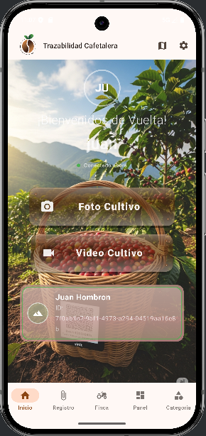

Gestiona tu finca, monitorea cultivos y asegura la calidad desde el origen con tecnología móvil avanzada. Diseñada para el campo, optimizada para ti.
Versión 1.0.4 • 50 MB

Captura fotos y videos de tus cultivos geolocalizados automáticamente para una trazabilidad inmutable.
Control total sobre zonas, variedades de café, áreas cultivadas y estimaciones de producción.
Trabaja sin interrupciones. Los datos se guardan localmente y se sincronizan cuando recuperas la conexión.
Visualiza estadísticas de producción y registros diarios con gráficos intuitivos y claros.
Completa el formulario y descarga el archivo de instalación en tu dispositivo Android.
Si tu teléfono te pregunta, habilita la opción de "Instalar aplicaciones desconocidas" o "Fuentes desconocidas".
Abre la app, configura tu finca y comienza a registrar la trazabilidad de tu café.